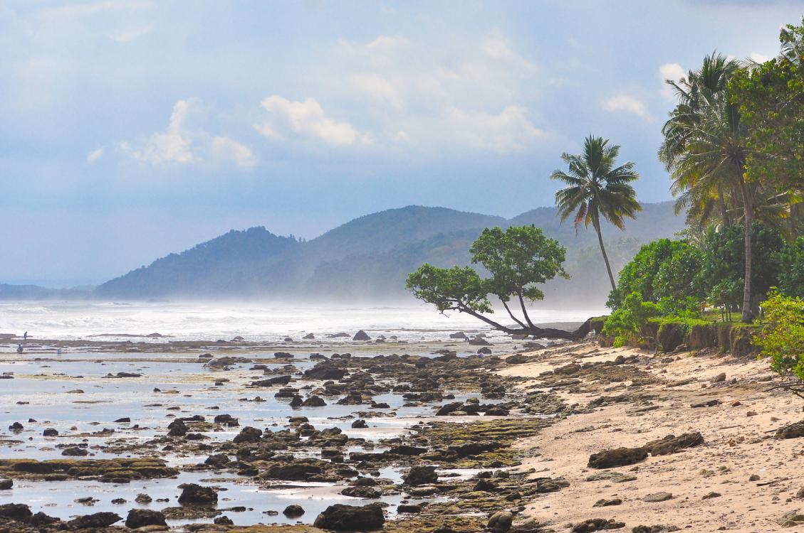
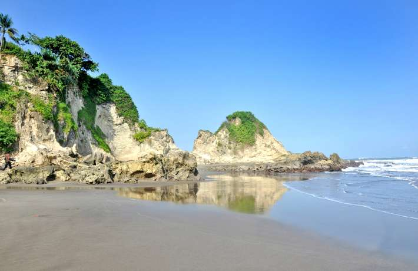
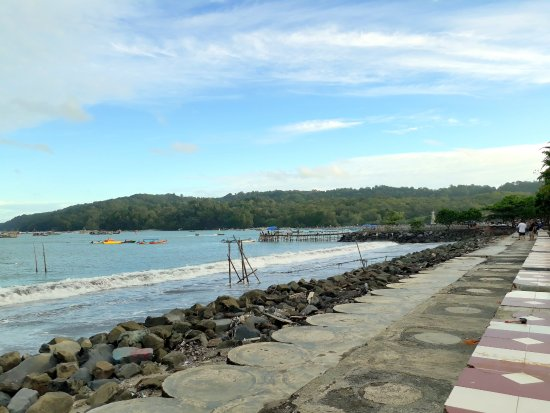
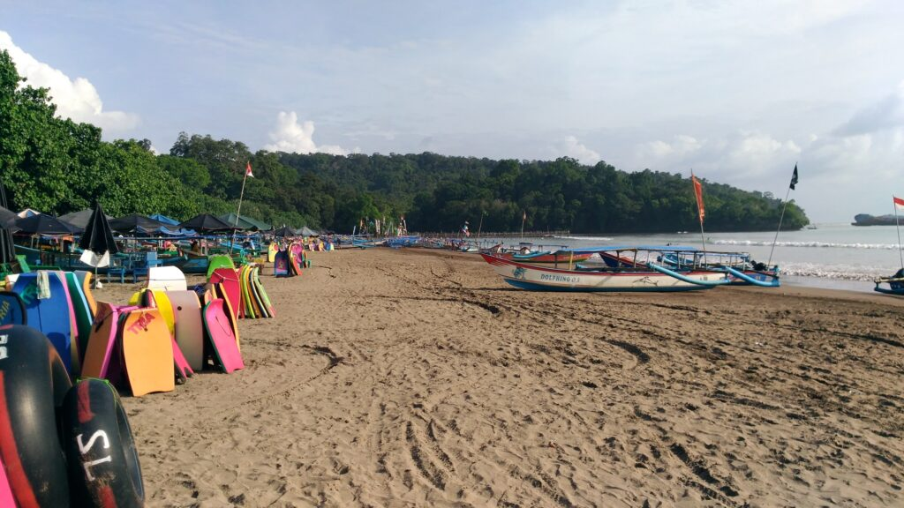
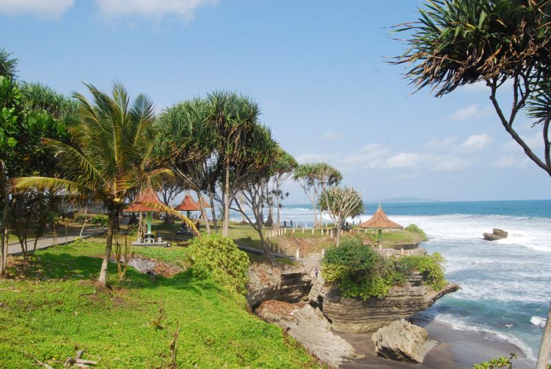
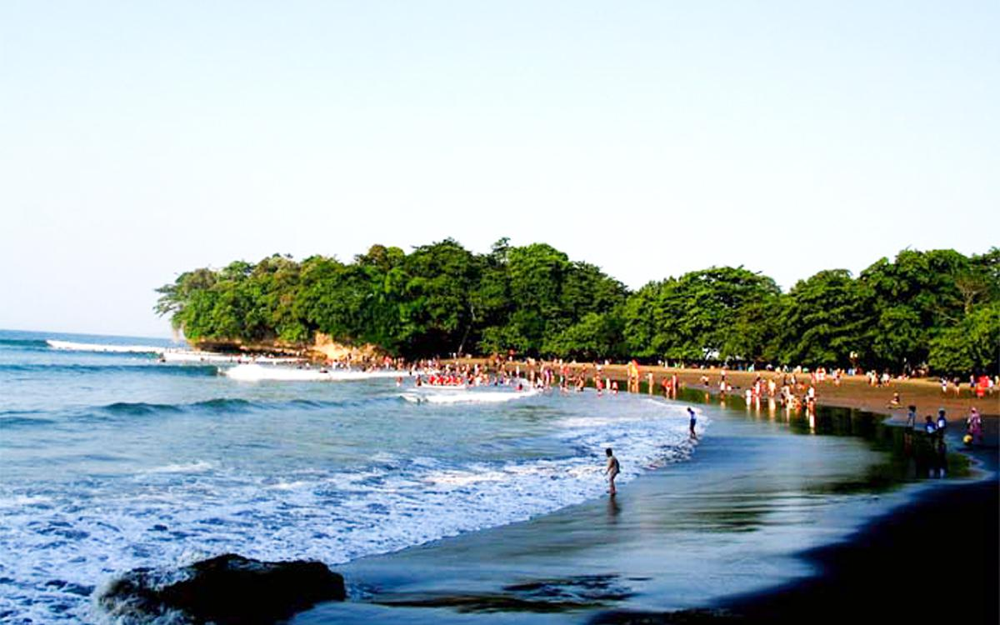

Pangandaran
Pangandaran adalah sebuah kabupaten yang terletak di selatan propinsi Jawa Barat. Terkenal dengan obyek wisata pantai yang indah, juga dengan Cagar Alam Pananjung, Green Canyon, dan lain-lain.
Geografis
Kabupaten Pangandaran terletak pada letak astronomis 108°30'BT hingga 108°40'BT serta 7°40'20"LS hingga 7°50'20"LS. Kabupaten Pangandaran berbatasan dengan kabupaten Ciamis disebelah utara, kabupaten Cilacap Jawa Tengah disebelah timur,
samudra Hindia disebelah selatan dan kabupaten Tasikmalaya disebelah barat. Kabupaten Pangandaran memiliki luas 101.104 kilometer persegi (39.036 sq mi). Terletak pada morfologi datar, bergelombang, bergunung-gunung pada rentang 0-2.000 mdpl. Kabupaten ini dialiri 3 daerah aliran sungai, yaitu DAS Ci Tanduy, Ci Julang, dan Ci Medang.
Wisata yang ada di Pangandaran

Pantai Karapyak
Di Karapyak anda bisa melakukan aktivitas pantai melihat biota laut, memancing, dan juga berkemah atau sekedar menikmati pemandangan
di sekitarnya. Aksesnya yang mudah dan dengan pemandangan pantai yang masih alami, wisatawan dapat mengajak keluarga dan atau group
sekedar bersantai atau bermain group fun games di area berkemah.

Pantai Karang Nini
Terletak pada areal hutan produksi perum perhutani, di jalur wisata menuju pantai Pangandaran, menjorok ke dalam area sekitar 2,5 km.
Berjarak sekitar 9km sebelum Pangandaran, dapat ditempuh dari berbagai arah baik Jawa Barat maupun Jawa Tengah, dan dilewati oleh
berbagai kendaraan umum.

Pantai Timur Pangandaran
Objek wisata yang merupakan primadona pantai di Jawa Barat ini terletak di Desa Pananjung Kecamatan Pangandaran dengan jarak ± 92 km
arah selatan kota Ciamis

Pantai Barat Pangandaran
Objek wisata yang merupakan primadona pantai di Jawa Barat ini terletak di Desa Pananjung Kecamatan Pangandaran dengan jarak ± 92 km
arah selatan kota Ciamis

Pantai Batuhiu
Sebuah pantai dengan tebing cukup terjal yang memiliki pemandangan lepas kearah samudra hindia. Batu hiu berjarak sekitar 14 km
dari Pangandaran. Terletak di Desa Ciliang Kecamatan Parigi, kurang lebih 14 km dari Pangandaran ke arah Selatan. Memiliki panorama
alam yang sangat indah. Dari atas bukit kecil yang ditumbuhi pohon-pohon Pandan Wong, kita menyaksikan birunya Samudra Indonesia
dengan deburan ombaknya yang menggulung putih.

Pantai Batu Karas
Objek wisata yang satu ini merupakan perpaduan nuansa alam antara objek wisata Pangandaran dan Batu Hiu dengan suasana alam yang
tenang, gelombang laut yang bersahabat dengan pantainya yang landai membuat pengunjung kerasan tinggal di kawasan ini. Terletak di
Desa Batukaras, Kecamatan Cijulang dengan jarak ± 34 km dari Pangandaran.
Makanan
Berikut adalah beberapa makanan khas yang dapat anda nikmati saat liburan ke pangandaran